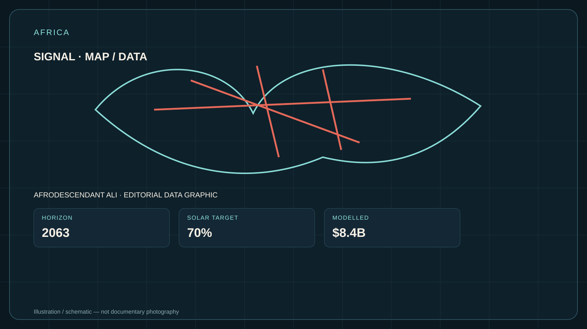

Gambia receives roadmap for national decarbonisation toward 2063
An AU-backed roadmap outlines long-term emissions cuts and a renewable-energy path; its projections remain targets to test through implementation.

What We Know
The African Union’s African Energy Commission said on 19 November that it handed The Gambia a National Decarbonisation and Development Plan aligned with Agenda 2063. The release describes a roadmap covering seven sectors and nine priority actions.
The numbers are projections
According to the AU release, the plan models potential savings of $8.4 billion through 2063, a 90% reduction in energy-related emissions and a 70% solar share by 2030. Those figures are plan projections, not measured results.
Why It Matters
The practical test is whether the roadmap becomes a financed programme: grid access, renewable procurement, transport and land-use choices will determine what is delivered.
What We’re Watching
Validation of the roadmap; financing and implementation dates; procurement decisions; and later reporting that can test the projected emissions and solar milestones.